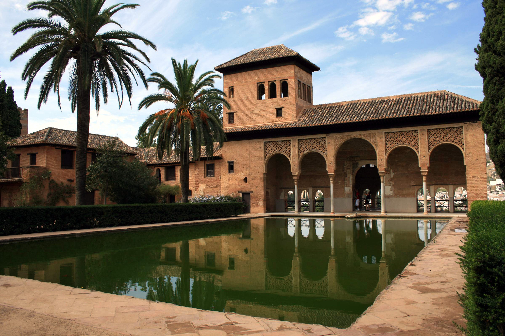

Granada: Magia y Herencia Nazarí

Granada es una de las joyas de Andalucía. Situada a los pies de Sierra Nevada, enamora a los visitantes con su herencia árabe, sus miradores de ensueño y su famosa cultura de las tapas gratis.
Maravillas que debes explorar:
- La Alhambra y el Generalife: El monumento más espectacular de la España musulmana, lleno de palacios, patios y jardines asombrosos.
- El Barrio del Albaicín: El antiguo barrio árabe, un laberinto de calles estrechas y casas blancas con vistas increíbles a la Alhambra.
- Mirador de San Nicolás: El lugar perfecto para ver uno de los atardeceres más famosos del mundo.
- El Sacromonte: Cuna del flamenco granadino, famoso por sus cuevas donde aún hoy se celebran espectáculos gitanos.
- Catedral y Capilla Real: El lugar donde descansan los restos de los Reyes Católicos.
¡Pide una bebida en cualquier terraza y disfruta de la tapa gratuita que la acompaña!